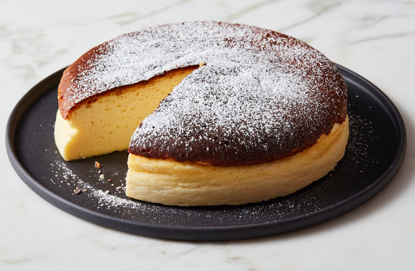

Japanese Cheesecake

Japanese Cheesecake adapted from Joanne Chang of Boston’s Flour Bakery
Japanese cheesecakes, sometimes called soufflé or cotton cheesecakes, have a melt-in-the-mouth texture
that’s like a classic cheesecake crossed with an ethereal sponge cake.Yum!
Ingredients
- 3 tablespoons/45 grams unsalted butter, at room temperature, plus more for greasing
- 5 large eggs, at room temperature
- 1 cup/225 grams cream cheese
- ½ cup/120 grams crème fraîche
- 1 teaspoon grated lemon zest
- 2 teaspoons vanilla extract
- ¼ teaspoon kosher salt
- ½ cup/100 grams plus 1 tablespoon superfine sugar
- ½ cup/65 grams cake flour
- 1 tablespoon confectioners’ sugar, for garnish
- zest and juice of 1 lemon
Steps
- Place rack in the center of the oven and heat to 400 degrees. Line bottom of an
8-by-3-inch round cake pan with parchment paper and butter only the bottom of the
pan (so the cheesecake can rise). You can also use a springform pan; just wrap the
bottom and sides with a double layer of foil, so the seams are covered.
- Separate eggs. Place whites in the bowl of an electric mixer fitted with the whisk attachment;
place yolks in a small bowl.
- Place cream cheese in a large metal bowl or double boiler insert and place over a pot
filled with 1 inch of simmering water. Stir until cream cheese is melted and smooth.
Whisk in crème fraîche and 3 tablespoons butter until well combined and smooth. Remove
from heat and whisk in lemon zest, vanilla and salt. Whisk in egg yolks and 3
tablespoons/40 grams superfine sugar. Sprinkle cake flour evenly over the top,
then whisk it in.
- Beat the egg whites on medium speed until you start to see the wires of the whisk leave
a trail in the whites. Slowly add the remaining 6 tablespoons superfine sugar, a tablespoon
at a time while beating. Continue to beat until whites are fluffy and hold a soft peak when
beaters are lifted. Gently fold about one-quarter of the whites into the yolk mixture
to lighten it. Then gently fold in remaining whites, taking care not to deflate batter.
Pour into prepared pan.
- Place cake pan in a roasting pan or other pan that is at least as deep as the cake pan;
transfer to the oven. Fill the larger pan with enough hot tap water to come one-quarter
of the way up the sides of the cake pan. (The cake is really light, so if you pour in too
much water it may float.)
- Bake until top of the cake is golden and doesn’t give when you press it gently in the middle,
35 to 40 minutes.
- Turn off oven and crack the oven door so that it cools off. Leave cheesecake in the cooling-off
oven for 2 hours so it cools slowly, which keeps the top from cracking.
- Lift cheesecake pan out of water and place on a wire rack. Let cool for another 2 hours.
Cheesecake will deflate slightly.
- Run a knife around the edges of the cheesecake to loosen it from sides of pan.
Remove sides of springform pan. If you used a regular cake pan, invert the cake
onto a plate, lift off pan, peel off parchment, then invert it right side up on
a serving plate.
- Chill cake for at least 2 hours before serving. Cake can be stored, well wrapped, for up
to 4 days in the refrigerator. Sift confectioners’ sugar over top of cake just
before serving.